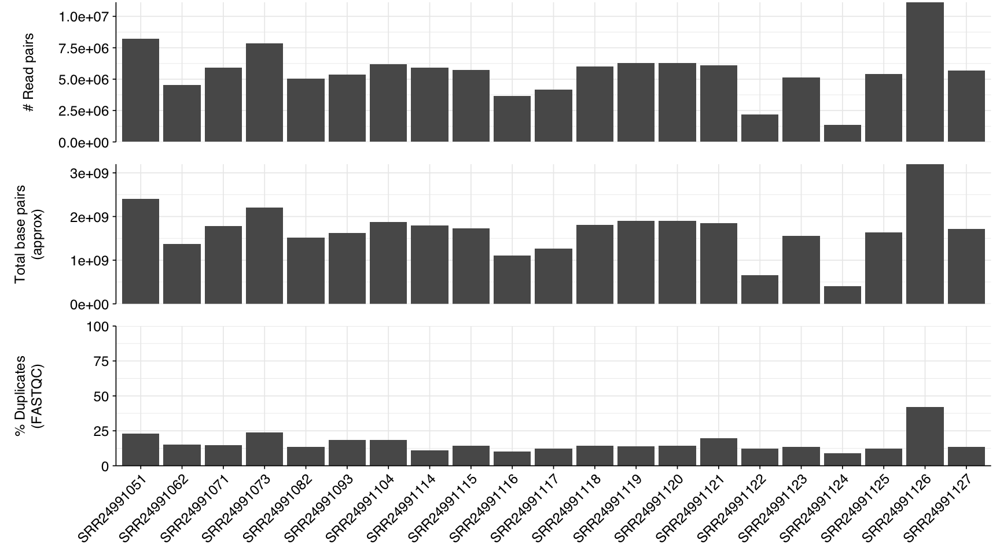
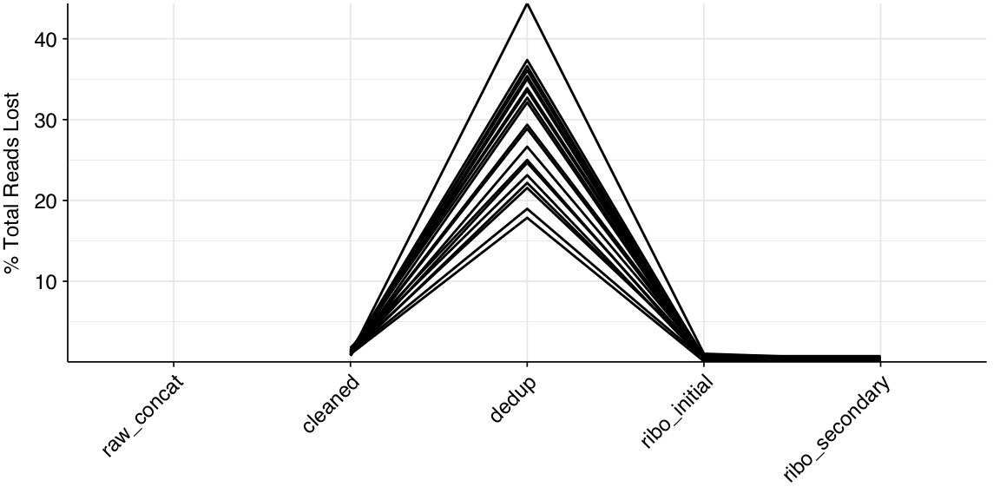
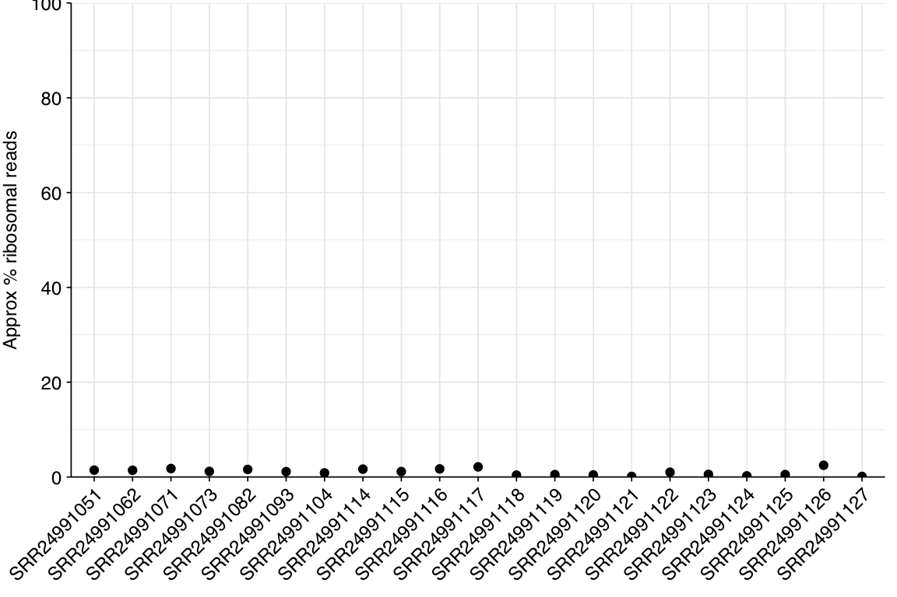
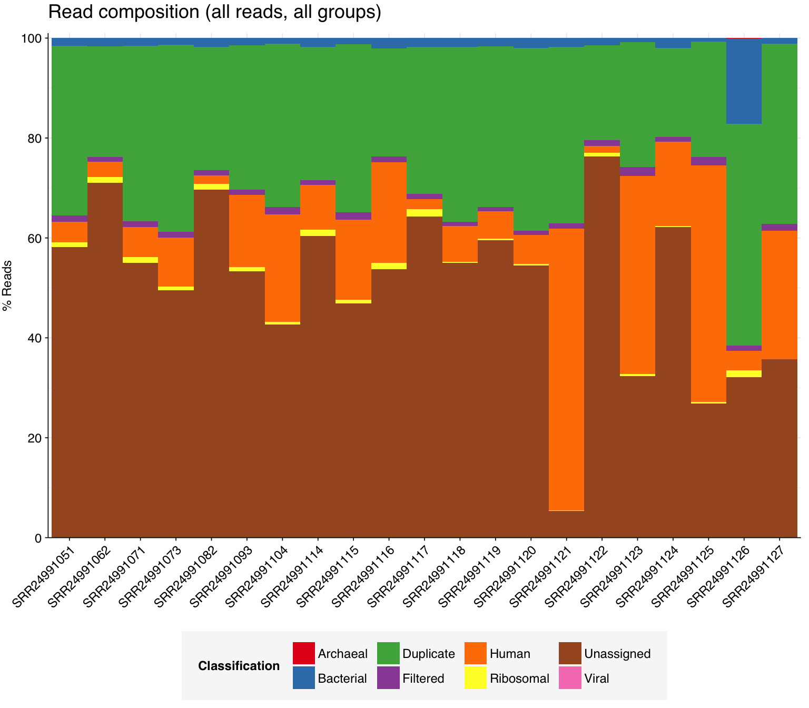
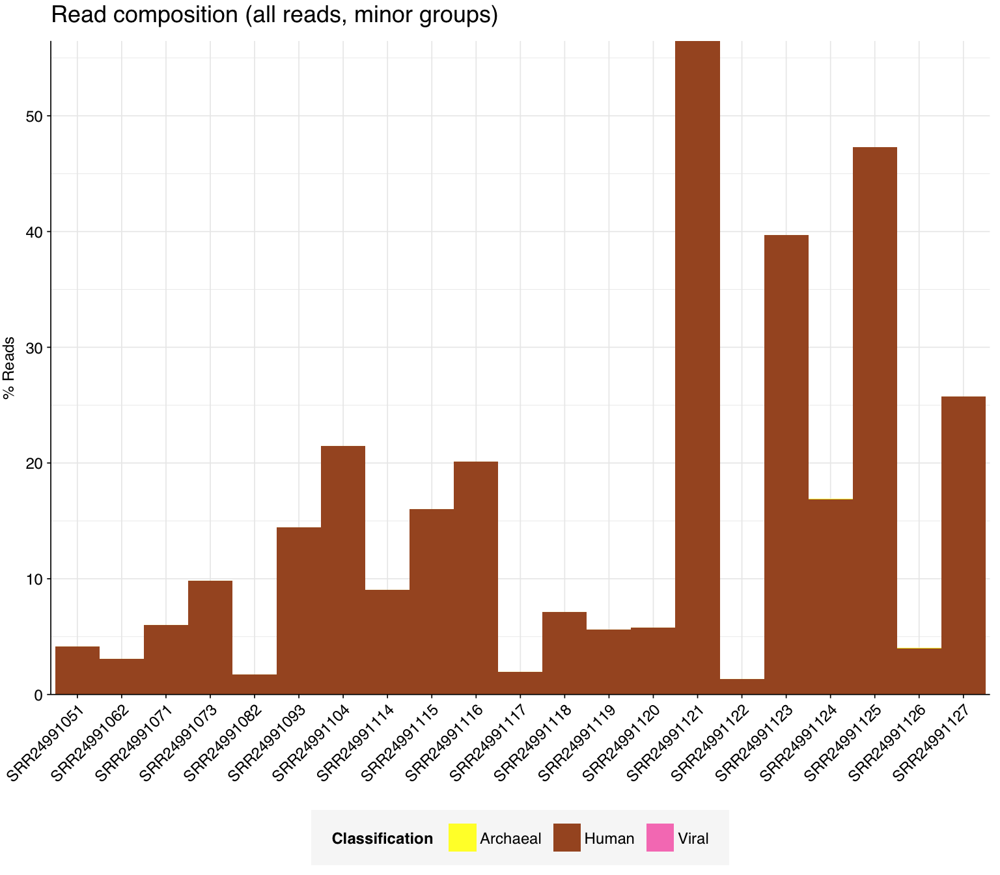
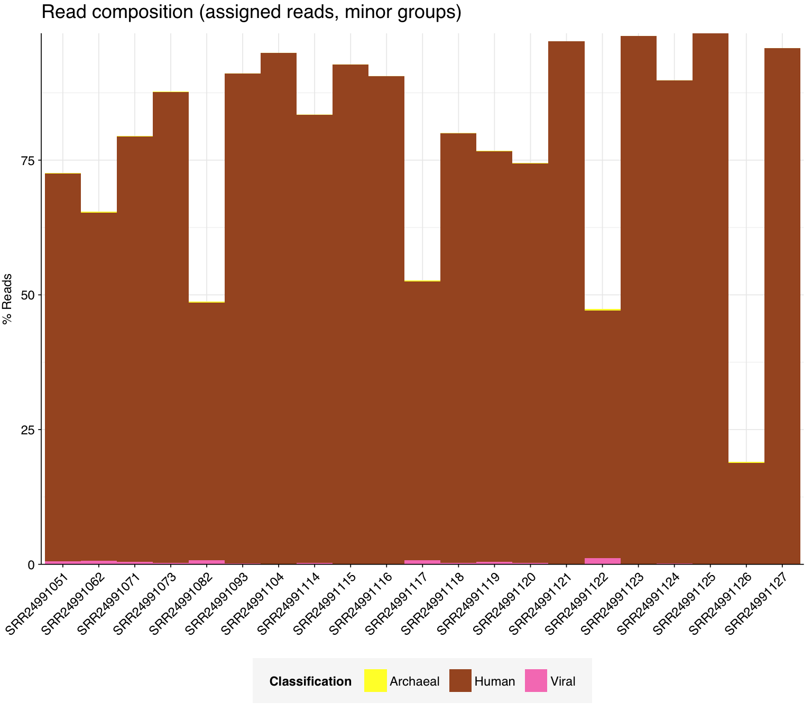
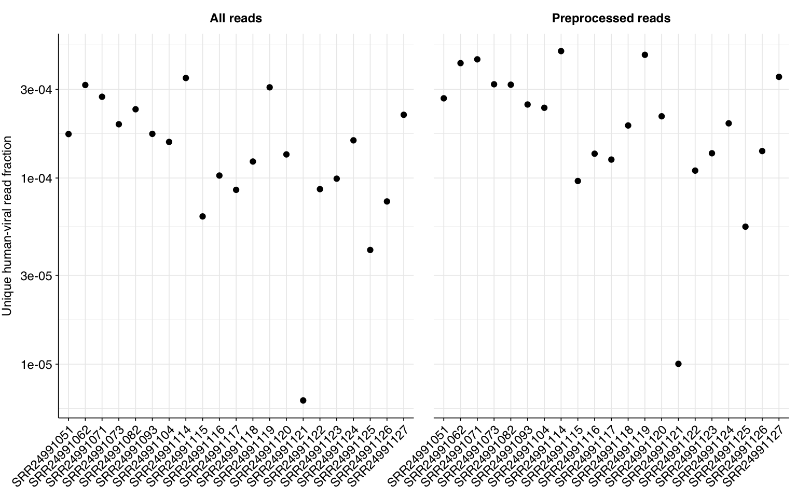
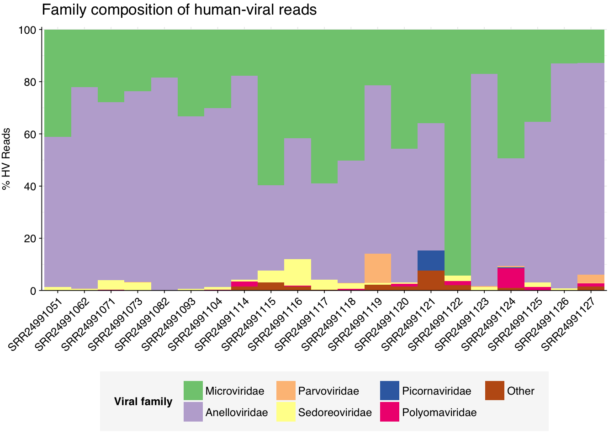

This is another potential study of (this series)[https://data.securebio.org/harmons-public-notebook/notebooks/2024-07-08_cebria-mendoza.html]. In this post, I analyze (Thijssen 2023)[https://doi.org/10.3390/v15071425], a dataset with ~20 samples from 100 healthy individuals in Iran.
The raw data
(This dataset)[https://www.ncbi.nlm.nih.gov/bioproject/?term=PRJNA983534] is composed of 21 samples which come from plasma pools of 5 people from Iran. In total, there were 100 healthy individuals that contributed to this pool. They did DNA + RNA sequencing for each pool, and the library preparation was combined so we do not have separate samples for each nucleic acid type.
In total, these 21 samples (they only report 20 so I need to check on this) contained 118M read pairs. The samples had 1.3M - 11.1M (mean 5.6M) read pairs each.
The number of reads looks pretty good, with every sample having at least 1M read pairs. The total number of base pairs also looks reasonable. The duplication rate is quite low, makes me think that Cebria-Mendoza had very high amounts of duplicates. I think this is approximately the number of duplicates we should see.
Code
# Prepare databasic_stats_raw_metrics<-basic_stats_raw%>%select(library, `# Read pairs` =n_read_pairs, `Total base pairs\n(approx)` =n_bases_approx, `% Duplicates\n(FASTQC)` =percent_duplicates)%>%pivot_longer(-library, names_to ="metric", values_to ="value")%>%mutate(metric =fct_inorder(metric))# Set up plot templatesg_basic<-ggplot(basic_stats_raw_metrics, aes(x =library, y =value))+geom_col(position ="dodge")+scale_x_discrete()+scale_y_continuous(expand =c(0, 0))+expand_limits(y =c(0, 100))+facet_grid(metric~., scales ="free", space ="free_x", switch ="y")+theme_kit+theme( axis.title.y =element_blank(), strip.text.y =element_text(face ="plain"))g_basic

Adapter content is quite high for the adapter called nextera-transposase-sequence. I need to look into this more deeply, TODO. As we’d expect, we see higher quality Q scores near the beginning of the read and a gradual decline towards the end of the read, however all positions seem to have a Q score of 35 which means that our reads are ~99.97% accurate. When looking at the Q score over all sequences, we can see a sharp peak around 35, which corresponds to the previous plot, indicating high read quality.
The average fraction of reads at each stage in the preprocessing pipeline is shown in the following table. This explains the high adapter content score, it turns out that adapters weren’t trimmed properly (only about %1 of reads lost), I would expect to lose more. Deduplication loses us about 30% of reads on average, then ribodepletion only loses as about 0.7% on average.
Code
# TODO: Group by pool size as well# Count read lossesn_reads_rel<-basic_stats%>%select(sample, stage, percent_duplicates, n_read_pairs)%>%group_by(sample)%>%arrange(sample, stage)%>%mutate(p_reads_retained =n_read_pairs/lag(n_read_pairs), p_reads_lost =1-p_reads_retained, p_reads_retained_abs =n_read_pairs/n_read_pairs[1], p_reads_lost_abs =1-p_reads_retained_abs, p_reads_lost_abs_marginal =p_reads_lost_abs-lag(p_reads_lost_abs))n_reads_rel_display<-n_reads_rel%>%rename(Stage=stage)%>%group_by(Stage)%>%summarize(`% Total Reads Lost (Cumulative)` =paste0(round(min(p_reads_lost_abs*100),1), "-", round(max(p_reads_lost_abs*100),1), " (mean ", round(mean(p_reads_lost_abs*100),1), ")"), `% Total Reads Lost (Marginal)` =paste0(round(min(p_reads_lost_abs_marginal*100),1), "-", round(max(p_reads_lost_abs_marginal*100),1), " (mean ", round(mean(p_reads_lost_abs_marginal*100),1), ")"), .groups="drop")%>%filter(Stage!="raw_concat")%>%mutate(Stage =Stage%>%as.numeric%>%factor(labels=c("Trimming & filtering", "Deduplication", "Initial ribodepletion", "Secondary ribodepletion")))n_reads_rel_display
These plots below show the trends from above in each sample.
# Plot relative read losses during preprocessingg_reads_rel<-ggplot(n_reads_rel, aes(x=stage, group=sample))+geom_line(aes(y=p_reads_lost_abs_marginal))+scale_y_continuous("% Total Reads Lost", expand=c(0,0), labels =function(x)x*100)+theme_kitg_reads_rel

TODO interpret adapter content across different steps. Q score remain the same during read cleaning when looking at the positions, with the end of the read actually improving in score. Q scores across all sequences look pretty much the same throughout cleaning.
Ribosomal reads were quite low, near 1% for every sample.
Code
# Calculate reads lost during ribodepletion (approximation for % ribosomal reads)reads_ribo<-n_reads_rel%>%filter(stage%in%c("dedup", "ribo_secondary"))%>%group_by(sample)%>%summarize(p_reads_ribo=1-n_read_pairs[2]/n_read_pairs[1], .groups ="drop")%>%inner_join(libraries, by ='sample')reads_ribo_summ<-reads_ribo%>%group_by(sample)%>%summarize(min=min(p_reads_ribo), max=max(p_reads_ribo), mean=mean(p_reads_ribo), .groups ="drop")%>%inner_join(libraries, by ='sample')g_reads_ribo<-ggplot(reads_ribo, aes(x=library, y=p_reads_ribo))+geom_point()+scale_y_continuous(name="Approx % ribosomal reads", limits=c(0,1), breaks=seq(0,1,0.2), expand=c(0,0), labels =function(y)y*100)+theme_kitg_reads_ribo

Taxonomic composition
High-level composition
To assess the high-level composition of the reads, I ran the ribodepleted files through Kraken2 and summarized the results with Bracken.
Code
# Prepare plotting templatesg_comp_base<-ggplot(mapping=aes(x=library, y=p_reads, fill=classification))+scale_x_discrete(name="Plasma pool")+theme_kit+theme(plot.title =element_text(hjust=0, face="plain", size=rel(1.5)))scale_y_pc_reads<-purrr::partial(scale_y_continuous, name ="% Reads", expand =c(0,0), labels =function(y)y*100)geom_comp<-purrr::partial(geom_col, position ="stack", width =1)# Plot overall compositiong_comp<-g_comp_base+geom_comp(data =comp)+scale_y_pc_reads(limits =c(0,1.01), breaks =seq(0,1,0.2))+scale_fill_brewer(palette ="Set1", name ="Classification")+ggtitle("Read composition (all reads, all groups)")g_comp

Code
# Repeat for classified reads onlypalette_assigned<-brewer.pal(9, "Set1")[5:9]g_comp_assigned<-g_comp_base+geom_comp(data =comp_assigned)+scale_y_pc_reads(limits =c(0,1.01), breaks =seq(0,1,0.2))+scale_fill_manual(values=palette_assigned, name ="Classification")+ggtitle("Read composition (assigned reads, all groups)")g_comp_assigned
Code
# Plot composition of minor componentspalette_minor<-brewer.pal(9, "Set1")[6:9]g_comp_minor<-g_comp_base+geom_comp(data=comp_minor)+scale_y_pc_reads()+scale_fill_manual(values=palette_minor, name ="Classification")+ggtitle("Read composition (all reads, minor groups)")g_comp_minor

Code
g_comp_assigned_minor<-g_comp_base+geom_comp(data=comp_assigned_minor)+scale_y_pc_reads()+scale_fill_manual(values=palette_minor, name ="Classification")+ggtitle("Read composition (assigned reads, minor groups)")g_comp_assigned_minor

Total viral content
Total viral fraction average \(2.36 \times 10^{-4}\) across samples. As a fraction of assigned (rather than total) reads, this jumped to \(3.19 \times 10^{-3}\):
I calculated the relative abundance of human-infecting viruses in two ways:
First, as the total number of deduplicated human-virus reads in each sample, divided by the number of raw reads (“All reads”).
Second, as a fraction of preprocessed (cleaned, deduplicated, computationally ribodepleted) reads (“Preprocessed reads”).
Code
# Get raw read countsread_counts_raw<-filter(basic_stats_raw)%>%select(sample, n_reads_raw =n_read_pairs)read_counts_preproc<-basic_stats%>%filter(stage=="ribo_initial")%>%select(sample, n_reads_preproc =n_read_pairs)# Get HV read countsread_counts_hv<-mrg_hv%>%filter(hv_status)%>%group_by(sample)%>%count(name="n_reads_hv")read_counts<-read_counts_raw%>%left_join(read_counts_hv, by=c("sample"))%>%mutate(n_reads_hv =replace_na(n_reads_hv, 0))%>%left_join(read_counts_preproc, by=c("sample"))%>%inner_join(libraries, by=c("sample"))%>%select(sample, n_reads_raw, n_reads_preproc, n_reads_hv)%>%mutate(n_samples =1, p_reads_total =n_reads_hv/n_reads_raw, p_reads_preproc =n_reads_hv/n_reads_preproc)read_counts_long<-read_counts%>%pivot_longer(starts_with("p_reads"), names_to="read_group", values_to="p_reads")%>%mutate(read_group =ifelse(read_group=="p_reads_total", "All reads", "Preprocessed reads"))# Combine for displayread_counts_agg<-read_counts%>%mutate(p_reads_total =n_reads_hv/n_reads_raw, p_reads_preproc =n_reads_hv/n_reads_preproc)%>%inner_join(libraries, by=c("sample"))read_counts_agg_long<-read_counts_agg%>%pivot_longer(starts_with("p_reads"), names_to="read_group", values_to="p_reads")%>%mutate(read_group =ifelse(read_group=="p_reads_total", "All reads", "Preprocessed reads"))# Visualizeg_read_counts<-ggplot(read_counts_agg_long, aes(x=library, y=p_reads))+geom_point()+scale_y_log10(name ="Unique human-viral read fraction")+facet_grid(.~read_group, scales ="free")+theme_kitg_read_counts

Overall taxonomy and composition
Composition of HV reads was changed from when looking at all viral reads. The two dominant viruses we see are Anellovirdae and Microviridae (bacteriophage).
Code
# Filter samples and add viral taxa informationsamples_keep<-read_counts%>%filter(n_reads_hv>5)%>%pull(sample)mrg_hv_named<-mrg_hv%>%filter(sample%in%samples_keep, hv_status)%>%left_join(viral_taxa, by="taxid")# Discover viral species & genera for HV readsraise_rank<-function(read_db, taxid_db, out_rank="species", verbose=FALSE){# Get higher ranks than search rankranks<-c("subspecies", "species", "subgenus", "genus", "subfamily", "family", "suborder", "order", "class", "subphylum", "phylum", "kingdom", "superkingdom")rank_match<-which.max(ranks==out_rank)high_ranks<-ranks[rank_match:length(ranks)]# Merge read DB and taxid DBreads<-read_db%>%select(-parent_taxid, -rank, -name)%>%left_join(taxid_db, by="taxid")# Extract sequences that are already at appropriate rankreads_rank<-filter(reads, rank==out_rank)# Drop sequences at a higher rank and return unclassified sequencesreads_norank<-reads%>%filter(rank!=out_rank, !rank%in%high_ranks, !is.na(taxid))while(nrow(reads_norank)>0){# As long as there are unclassified sequences...# Promote read taxids and re-merge with taxid DB, then re-classify and filterreads_remaining<-reads_norank%>%mutate(taxid =parent_taxid)%>%select(-parent_taxid, -rank, -name)%>%left_join(taxid_db, by="taxid")reads_rank<-reads_remaining%>%filter(rank==out_rank)%>%bind_rows(reads_rank)reads_norank<-reads_remaining%>%filter(rank!=out_rank, !rank%in%high_ranks, !is.na(taxid))}# Finally, extract and append reads that were excluded during the processreads_dropped<-reads%>%filter(!seq_id%in%reads_rank$seq_id)reads_out<-reads_rank%>%bind_rows(reads_dropped)%>%select(-parent_taxid, -rank, -name)%>%left_join(taxid_db, by="taxid")return(reads_out)}hv_reads_species<-raise_rank(mrg_hv_named, viral_taxa, "species")hv_reads_genus<-raise_rank(mrg_hv_named, viral_taxa, "genus")hv_reads_family<-raise_rank(mrg_hv_named, viral_taxa, "family")
Code
threshold_major_family<-0.05# Count reads for each human-viral familyhv_family_counts<-hv_reads_family%>%group_by(sample, name, taxid)%>%count(name ="n_reads_hv")%>%group_by(sample)%>%mutate(p_reads_hv =n_reads_hv/sum(n_reads_hv))# Identify high-ranking families and group othershv_family_major_tab<-hv_family_counts%>%group_by(name)%>%filter(p_reads_hv==max(p_reads_hv))%>%filter(row_number()==1)%>%arrange(desc(p_reads_hv))%>%filter(p_reads_hv>threshold_major_family)hv_family_counts_major<-hv_family_counts%>%mutate(name_display =ifelse(name%in%hv_family_major_tab$name, name, "Other"))%>%group_by(sample, name_display)%>%summarize(n_reads_hv =sum(n_reads_hv), p_reads_hv =sum(p_reads_hv), .groups="drop")%>%mutate(name_display =factor(name_display, levels =c(hv_family_major_tab$name, "Other")))hv_family_counts_display<-hv_family_counts_major%>%rename(p_reads =p_reads_hv, classification =name_display)%>%inner_join(libraries, by ='sample')# Plotg_hv_family<-g_comp_base+geom_col(data=hv_family_counts_display, position ="stack", width=1)+scale_y_continuous(name="% HV Reads", limits=c(0,1.01), breaks =seq(0,1,0.2), expand=c(0,0), labels =function(y)y*100)+scale_fill_brewer(palette ='Accent', name ="Viral family")+labs(title="Family composition of human-viral reads")+guides(fill=guide_legend(ncol=4))+theme(plot.title =element_text(size=rel(1.4), hjust=0, face="plain"))g_hv_family

Code
# Get most prominent families for texthv_family_collate<-hv_family_counts%>%group_by(name, taxid)%>%summarize(n_reads_tot =sum(n_reads_hv), p_reads_max =max(p_reads_hv), .groups="drop")%>%arrange(desc(n_reads_tot))hv_family_collate
To get a good overview of families, genus, and species, we can look at a Sankey plot.
Code
# Function to create linkscreate_links<-function(data){family_to_genus<-data%>%filter(!is.na(genus))%>%group_by(family, genus)%>%summarise(value =n(), .groups ="drop")%>%mutate(source =family, target =genus)genus_to_species<-data%>%group_by(genus, species)%>%summarise(value =n(), .groups ="drop")%>%mutate(source =genus, target =species)family_to_species<-data%>%filter(is.na(genus))%>%group_by(family, species)%>%summarise(value =n(), .groups ="drop")%>%mutate(source =family, target =species)bind_rows(family_to_genus, genus_to_species, family_to_species)%>%filter(!is.na(source))}# Function to create nodescreate_nodes<-function(links){data.frame( name =c(links$source, links$target)%>%unique())}# Function to prepare data for Sankey diagramprepare_sankey_data<-function(links, nodes){links$IDsource<-match(links$source, nodes$name)-1links$IDtarget<-match(links$target, nodes$name)-1list(links =links, nodes =nodes)}# Function to create Sankey plotcreate_sankey_plot<-function(sankey_data){sankeyNetwork( Links =sankey_data$links, Nodes =sankey_data$nodes, Source ="IDsource", Target ="IDtarget", Value ="value", NodeID ="name", sinksRight =TRUE, nodeWidth =50, fontSize =14, height =800, width =1000)}save_sankey_as_png<-function(sankey_plot, width=1000, height=800){# Save the plot as an HTML filesaveWidget(sankey_plot, sprintf('%s/sankey.html',data_dir))}format_scientific<-function(x, digits=2){sapply(x, function(val){if(is.na(val)||abs(val)<1e-15){return("0")}else{exponent<-floor(log10(abs(val)))coef<-val/10^exponentreturn(sprintf("%.1f × 10^%d", round(coef, digits), exponent))}})}data<-result%>%mutate(across(c(genus_n_reads_tot, genus_ra_reads_tot), ~replace_na(., 0)), genus =ifelse(is.na(genus), "Unknown Genus", genus))%>%mutate( species =paste0(species, sprintf(' (%s)', format_scientific(species_ra_reads_tot))), genus =paste0(genus, sprintf(' (%s)', format_scientific(genus_ra_reads_tot))), family =paste0(family, sprintf(' (%s)', format_scientific(family_ra_reads_tot))))links<-as.data.frame(create_links(data))nodes<-create_nodes(links)sankey_data<-prepare_sankey_data(links, nodes)sankey<-create_sankey_plot(sankey_data)sankey
Code
save_sankey_as_png(sankey)
To get a better idea of relative abundance of species, we can plot a dot plot, where each dot is the relative abundance of that species in a sample.
Severe acute respiratory syndrome-related coronavirus
SARS coronavirus
High, causes severe respiratory illness
Sapporo virus
Sapporo virus or Sapovirus
Moderate, causes gastroenteritis
Human mastadenovirus F
Adenovirus F
Moderate, can cause gastroenteritis
Alphapolyomavirus quintihominis
Not widely known
Low, but some polyomaviruses can cause disease in immunocompromised individuals
Alphapapillomavirus 4
Human papillomavirus (HPV) type 4
Low to moderate, can cause warts
Gokushovirus WZ-2015a
Not widely known
Low, typically infects bacteria
Human gut gokushovirus
Not widely known
Low, typically infects bacteria in human gut
Microviridae sp.
Not widely known
Low, typically infects bacteria
Microvirus sp.
Not widely known
Low, typically infects bacteria
Ambidensovirus sp.
Not widely known
Low for humans, can be pathogenic to insects
Dependoparvovirus primate1
Adeno-associated virus (AAV)
Low, not known to cause disease in humans
Vaccinia virus
Vaccinia virus
Low to moderate, used as smallpox vaccine
CrAssphage ZA
Not widely known
Low, typically infects bacteria in human gut
Inovirus D_HF3_19
Not widely known
Low, typically infects bacteria
Inovirus D_HF5_49
Not widely known
Low, typically infects bacteria
Cardiovirus D
Not widely known
Unknown, some cardioviruses can cause disease in animals
Cosavirus A
Not widely known
Unknown, potentially associated with gastroenteritis
I’ve ordered these from pathogenic potential to not. We do get coronavirus, however when we look up the taxid on NCBI, we get (the following)[https://www.ncbi.nlm.nih.gov/Taxonomy/Browser/wwwtax.cgi?mode=Info&id=694009&lvl=3&lin=f&keep=1&srchmode=1&unlock#note1] which seems to be an id for general corona and not SARS-CoV-2.
Conclusion
I need to look at results more, but from a broad overview this dataset looks cool. I need to double check the adapter content stuff, but outside of that, I’m quite happy with this.
Source Code
---title: "Workflow of Thijssen et al. (2023)"subtitle: "Pooled plasma from Iran"author: "Harmon Bhasin"date: 2024-07-22format: html: code-fold: true code-tools: true code-link: true df-print: pagededitor: visualtitle-block-banner: "#de2d26"---```{r}#| label: load-packages#| include: falselibrary(tidyverse)library(cowplot)library(patchwork)library(fastqcr)library(RColorBrewer)library(networkD3)library(readxl)library(htmlwidgets)library(ggbeeswarm)library(latex2exp)image_dir <- image_dir <-'/Users/harmonbhasin/work/securebio/lab_meeting/blauwkamp'source("/Users/harmonbhasin/work/securebio/sampling-strategies/scripts/aux_plot-theme.R")theme_base <- theme_base +theme(aspect.ratio =NULL)theme_kit <- theme_base +theme(axis.text.x =element_text(hjust =1, angle =45),axis.title.x =element_blank(),)tnl <-theme(legend.position ="none")```This is another potential study of (this series)\[https://data.securebio.org/harmons-public-notebook/notebooks/2024-07-08_cebria-mendoza.html\]. In this post, I analyze (Thijssen 2023)\[https://doi.org/10.3390/v15071425\], a dataset with \~20 samples from 100 healthy individuals in Iran.# The raw data(This dataset)\[https://www.ncbi.nlm.nih.gov/bioproject/?term=PRJNA983534\] is composed of 21 samples which come from plasma pools of 5 people from Iran. In total, there were 100 healthy individuals that contributed to this pool. They did DNA + RNA sequencing for each pool, and the library preparation was combined so we do not have separate samples for each nucleic acid type.In total, these 21 samples (they only report 20 so I need to check on this) contained 118M read pairs. The samples had 1.3M - 11.1M (mean 5.6M) read pairs each.```{r}#| warning: false#| label: read-qc-data#| include: false# Data input pathsdata_dir <-"/Users/harmonbhasin/work/securebio/nao-harmon/thijssen2023/analysis/"input_dir <-file.path(data_dir, "input")results_dir <-file.path(data_dir, "results")qc_dir <-file.path(results_dir, "qc")hv_dir <-file.path(results_dir, "hv")libraries_path <-file.path(input_dir, "libraries.csv")basic_stats_path <-file.path(qc_dir, "qc_basic_stats.tsv.gz")adapter_stats_path <-file.path(qc_dir, "qc_adapter_stats.tsv.gz")quality_base_stats_path <-file.path(qc_dir, "qc_quality_base_stats.tsv.gz")quality_seq_stats_path <-file.path(qc_dir, "qc_quality_sequence_stats.tsv.gz")# Import libraries and extract metadata from sample nameslibraries <-read_csv(libraries_path, show_col_types =FALSE)# Import QC datastages <-c("raw_concat", "cleaned", "dedup", "ribo_initial", "ribo_secondary")basic_stats <-read_tsv(basic_stats_path, show_col_types =FALSE) %>%inner_join(libraries, by="sample") %>%arrange(sample) %>%mutate(stage =factor(stage, levels = stages),sample =fct_inorder(sample))adapter_stats <-read_tsv(adapter_stats_path, show_col_types =FALSE) %>%inner_join(libraries, by="sample") %>%arrange(sample) %>%mutate(stage =factor(stage, levels = stages),read_pair =fct_inorder(as.character(read_pair)))quality_base_stats <-read_tsv(quality_base_stats_path, show_col_types =FALSE) %>%inner_join(libraries, by="sample") %>%arrange(sample) %>%mutate(stage =factor(stage, levels = stages),read_pair =fct_inorder(as.character(read_pair)))quality_seq_stats <-read_tsv(quality_seq_stats_path, show_col_types =FALSE) %>%inner_join(libraries, by="sample") %>%arrange(sample) %>%mutate(stage =factor(stage, levels = stages),read_pair =fct_inorder(as.character(read_pair)))# Filter to raw data basic_stats_raw <- basic_stats %>%filter(stage =="raw_concat") adapter_stats_raw <- adapter_stats %>%filter(stage =="raw_concat") quality_base_stats_raw <- quality_base_stats %>%filter(stage =="raw_concat") quality_seq_stats_raw <- quality_seq_stats %>%filter(stage =="raw_concat")# Get key values for readoutraw_read_counts <- basic_stats_raw %>%summarize(rmin =min(n_read_pairs), rmax=max(n_read_pairs),rmean=mean(n_read_pairs), rtot =sum(n_read_pairs),btot =sum(n_bases_approx),dmin =min(percent_duplicates), dmax=max(percent_duplicates),dmean=mean(percent_duplicates), .groups ="drop")```The number of reads looks pretty good, with every sample having at least 1M read pairs. The total number of base pairs also looks reasonable. The duplication rate is quite low, makes me think that Cebria-Mendoza had very high amounts of duplicates. I think this is approximately the number of duplicates we should see.```{r}#| fig-width: 9#| warning: false#| label: plot-basic-stats# Prepare databasic_stats_raw_metrics <- basic_stats_raw %>%select(library,`# Read pairs`= n_read_pairs,`Total base pairs\n(approx)`= n_bases_approx,`% Duplicates\n(FASTQC)`= percent_duplicates) %>%pivot_longer(-library, names_to ="metric", values_to ="value") %>%mutate(metric =fct_inorder(metric)) # Set up plot templatesg_basic <-ggplot(basic_stats_raw_metrics, aes(x = library, y = value)) +geom_col(position ="dodge") +scale_x_discrete() +scale_y_continuous(expand =c(0, 0)) +expand_limits(y =c(0, 100)) +facet_grid(metric ~ ., scales ="free", space ="free_x", switch ="y") + theme_kit +theme(axis.title.y =element_blank(),strip.text.y =element_text(face ="plain") )g_basic```Adapter content is quite high for the adapter called nextera-transposase-sequence. I need to look into this more deeply, TODO. As we'd expect, we see higher quality Q scores near the beginning of the read and a gradual decline towards the end of the read, however all positions seem to have a Q score of 35 which means that our reads are \~99.97% accurate. When looking at the Q score over all sequences, we can see a sharp peak around 35, which corresponds to the previous plot, indicating high read quality.```{r}#| label: plot-raw-quality#| fig-width: 8# Set up plotting templatesg_qual_raw <-ggplot(mapping=aes(linetype=read_pair, group=interaction(sample,read_pair))) +scale_linetype_discrete(name ="Read Pair") +guides(color=guide_legend(nrow=2,byrow=TRUE),linetype =guide_legend(nrow=2,byrow=TRUE)) + theme_base# Visualize adaptersg_adapters_raw <- g_qual_raw +geom_line(aes(x=position, y=pc_adapters), data=adapter_stats_raw) +scale_y_continuous(name="% Adapters", limits=c(0,NA),breaks =seq(0,100,10), expand=c(0,0)) +scale_x_continuous(name="Position", limits=c(0,NA),breaks=seq(0,500,20), expand=c(0,0)) +facet_grid(.~adapter)g_adapters_raw# Visualize qualityg_quality_base_raw <- g_qual_raw +geom_hline(yintercept=25, linetype="dashed", color="red") +geom_hline(yintercept=30, linetype="dashed", color="red") +geom_line(aes(x=position, y=mean_phred_score), data=quality_base_stats_raw) +scale_y_continuous(name="Mean Phred score", expand=c(0,0), limits=c(10,45)) +scale_x_continuous(name="Position", limits=c(0,NA),breaks=seq(0,500,20), expand=c(0,0))g_quality_base_rawg_quality_seq_raw <- g_qual_raw +geom_vline(xintercept=25, linetype="dashed", color="red") +geom_vline(xintercept=30, linetype="dashed", color="red") +geom_line(aes(x=mean_phred_score, y=n_sequences), data=quality_seq_stats_raw) +scale_x_continuous(name="Mean Phred score", expand=c(0,0)) +scale_y_continuous(name="# Sequences", expand=c(0,0))g_quality_seq_raw```# Preprocessing## High-level metricsThe average fraction of reads at each stage in the preprocessing pipeline is shown in the following table. This explains the high adapter content score, it turns out that adapters weren't trimmed properly (only about %1 of reads lost), I would expect to lose more. Deduplication loses us about 30% of reads on average, then ribodepletion only loses as about 0.7% on average.```{r}#| label: preproc-table# TODO: Group by pool size as well# Count read lossesn_reads_rel <- basic_stats %>%select(sample, stage, percent_duplicates, n_read_pairs) %>%group_by(sample) %>%arrange(sample, stage) %>%mutate(p_reads_retained = n_read_pairs /lag(n_read_pairs),p_reads_lost =1- p_reads_retained,p_reads_retained_abs = n_read_pairs / n_read_pairs[1],p_reads_lost_abs =1-p_reads_retained_abs,p_reads_lost_abs_marginal = p_reads_lost_abs -lag(p_reads_lost_abs))n_reads_rel_display <- n_reads_rel %>%rename(Stage=stage) %>%group_by(Stage) %>%summarize(`% Total Reads Lost (Cumulative)`=paste0(round(min(p_reads_lost_abs*100),1), "-", round(max(p_reads_lost_abs*100),1), " (mean ", round(mean(p_reads_lost_abs*100),1), ")"),`% Total Reads Lost (Marginal)`=paste0(round(min(p_reads_lost_abs_marginal*100),1), "-", round(max(p_reads_lost_abs_marginal*100),1), " (mean ", round(mean(p_reads_lost_abs_marginal*100),1), ")"), .groups="drop") %>%filter(Stage !="raw_concat") %>%mutate(Stage = Stage %>% as.numeric %>%factor(labels=c("Trimming & filtering", "Deduplication", "Initial ribodepletion", "Secondary ribodepletion")))n_reads_rel_display```These plots below show the trends from above in each sample.```{r}#| label: preproc-figures#| warning: false#| fig-height: 3#| fig-width: 6g_stage_trace <-ggplot(basic_stats, aes(x=stage, group=sample)) + theme_kit# Plot reads over preprocessingg_reads_stages <- g_stage_trace +geom_line(aes(y=n_read_pairs)) +scale_y_continuous("# Read pairs", expand=c(0,0), limits=c(0,NA))g_reads_stages# Plot relative read losses during preprocessingg_reads_rel <-ggplot(n_reads_rel, aes(x=stage, group=sample)) +geom_line(aes(y=p_reads_lost_abs_marginal)) +scale_y_continuous("% Total Reads Lost", expand=c(0,0), labels =function(x) x*100) + theme_kitg_reads_rel```TODO interpret adapter content across different steps. Q score remain the same during read cleaning when looking at the positions, with the end of the read actually improving in score. Q scores across all sequences look pretty much the same throughout cleaning.```{r}#| warning: false#| label: plot-quality#| fig-height: 8g_qual <-ggplot(mapping=aes(linetype=read_pair, group=interaction(sample,read_pair))) +scale_linetype_discrete(name ="Read Pair") +guides(color=guide_legend(nrow=2,byrow=TRUE),linetype =guide_legend(nrow=2,byrow=TRUE)) + theme_base# Visualize adaptersg_adapters <- g_qual +geom_line(aes(x=position, y=pc_adapters), data=adapter_stats) +scale_y_continuous(name="% Adapters", limits=c(0,20),breaks =seq(0,50,10), expand=c(0,0)) +scale_x_continuous(name="Position", limits=c(0,NA),breaks=seq(0,140,20), expand=c(0,0)) +facet_grid(stage~adapter)g_adapters# Visualize qualityg_quality_base <- g_qual +geom_hline(yintercept=25, linetype="dashed", color="red") +geom_hline(yintercept=30, linetype="dashed", color="red") +geom_line(aes(x=position, y=mean_phred_score), data=quality_base_stats) +scale_y_continuous(name="Mean Phred score", expand=c(0,0), limits=c(10,45)) +scale_x_continuous(name="Position", limits=c(0,NA),breaks=seq(0,140,20), expand=c(0,0)) +facet_grid(stage~.)g_quality_baseg_quality_seq <- g_qual +geom_vline(xintercept=25, linetype="dashed", color="red") +geom_vline(xintercept=30, linetype="dashed", color="red") +geom_line(aes(x=mean_phred_score, y=n_sequences), data=quality_seq_stats) +scale_x_continuous(name="Mean Phred score", expand=c(0,0)) +scale_y_continuous(name="# Sequences", expand=c(0,0)) +facet_grid(stage~., scales ="free_y")g_quality_seq```All samples tend to follow similar trends for deduplication, with a large decrease in read length post adapter trimming.```{r}#| label: preproc-dedup#| fig-height: 4#| fig-width: 6stage_dup <- basic_stats %>%group_by(stage) %>%summarize(dmin =min(percent_duplicates), dmax=max(percent_duplicates),dmean=mean(percent_duplicates), .groups ="drop")g_dup_stages <- g_stage_trace +geom_line(aes(y=percent_duplicates)) +scale_y_continuous("% Duplicates", limits=c(0,NA), expand=c(0,0))g_dup_stagesg_readlen_stages <- g_stage_trace +geom_line(aes(y=mean_seq_len)) +scale_y_continuous("Mean read length (nt)", expand=c(0,0), limits=c(0,NA))g_readlen_stages```Ribosomal reads were quite low, near 1% for every sample.```{r}#| label: ribo-frac#| fig-height: 4#| fig-width: 6# Calculate reads lost during ribodepletion (approximation for % ribosomal reads)reads_ribo <- n_reads_rel %>%filter(stage %in%c("dedup", "ribo_secondary")) %>%group_by(sample) %>%summarize(p_reads_ribo=1-n_read_pairs[2]/n_read_pairs[1], .groups ="drop") %>%inner_join(libraries, by ='sample')reads_ribo_summ <- reads_ribo %>%group_by(sample) %>%summarize(min=min(p_reads_ribo), max=max(p_reads_ribo),mean=mean(p_reads_ribo), .groups ="drop") %>%inner_join(libraries, by ='sample')g_reads_ribo <-ggplot(reads_ribo, aes(x=library, y=p_reads_ribo)) +geom_point() +scale_y_continuous(name="Approx % ribosomal reads", limits=c(0,1),breaks=seq(0,1,0.2), expand=c(0,0), labels =function(y) y*100)+ theme_kitg_reads_ribo```# Taxonomic composition## High-level compositionTo assess the high-level composition of the reads, I ran the ribodepleted files through Kraken2 and summarized the results with Bracken.```{r}#| label: prepare-composition#| include: falseclassifications <-c("Filtered", "Duplicate", "Ribosomal", "Unassigned","Bacterial", "Archaeal", "Viral", "Human")# Import composition datatax_final_dir <-file.path(results_dir, "taxonomy_final")comp_path <-file.path(tax_final_dir, "taxonomic_composition.tsv.gz")comp <-read_tsv(comp_path) %>%left_join(libraries) comp_minor <- comp %>%filter(classification %in%c("Archaeal", "Viral", "Human", "Other"))comp_assigned <- comp %>%filter(! classification %in%c("Filtered", "Duplicate", "Ribosomal", "Unassigned")) %>%group_by(sample) %>%mutate(p_reads = n_reads/sum(n_reads))comp_assigned_minor <- comp_assigned %>%filter(classification %in%c("Archaeal", "Viral", "Human", "Other"))# Summarize compositionread_comp_summ <- comp %>%group_by(classification) %>%summarize(n_reads =sum(n_reads), .groups ="drop_last") %>%mutate(n_reads =replace_na(n_reads,0),p_reads = n_reads/sum(n_reads),pc_reads = p_reads*100)``````{r}#| label: plot-composition-all#| fig-height: 7#| fig-width: 8# Prepare plotting templatesg_comp_base <-ggplot(mapping=aes(x=library, y=p_reads, fill=classification)) +scale_x_discrete(name="Plasma pool") + theme_kit +theme(plot.title =element_text(hjust=0, face="plain", size=rel(1.5)))scale_y_pc_reads <- purrr::partial(scale_y_continuous, name ="% Reads",expand =c(0,0), labels =function(y) y*100)geom_comp <- purrr::partial(geom_col, position ="stack", width =1)# Plot overall compositiong_comp <- g_comp_base +geom_comp(data = comp) +scale_y_pc_reads(limits =c(0,1.01), breaks =seq(0,1,0.2)) +scale_fill_brewer(palette ="Set1", name ="Classification") +ggtitle("Read composition (all reads, all groups)")g_comp# Repeat for classified reads onlypalette_assigned <-brewer.pal(9, "Set1")[5:9]g_comp_assigned <- g_comp_base +geom_comp(data = comp_assigned) +scale_y_pc_reads(limits =c(0,1.01), breaks =seq(0,1,0.2)) +scale_fill_manual(values=palette_assigned, name ="Classification") +ggtitle("Read composition (assigned reads, all groups)")g_comp_assigned# Plot composition of minor componentspalette_minor <-brewer.pal(9, "Set1")[6:9]g_comp_minor <- g_comp_base +geom_comp(data=comp_minor) +scale_y_pc_reads() +scale_fill_manual(values=palette_minor, name ="Classification") +ggtitle("Read composition (all reads, minor groups)")g_comp_minorg_comp_assigned_minor <- g_comp_base +geom_comp(data=comp_assigned_minor) +scale_y_pc_reads() +scale_fill_manual(values=palette_minor, name ="Classification") +ggtitle("Read composition (assigned reads, minor groups)")g_comp_assigned_minor```## Total viral contentTotal viral fraction average $2.36 \times 10^{-4}$ across samples. As a fraction of assigned (rather than total) reads, this jumped to $3.19 \times 10^{-3}$:```{r}#| label: p-viralp_reads_viral_all <- comp %>%filter(classification =="Viral") %>%mutate(read_group ="All reads")p_reads_viral_assigned <- comp_assigned %>%filter(classification =="Viral") %>%mutate(read_group ="Classified reads")p_reads_viral <-bind_rows(p_reads_viral_all, p_reads_viral_assigned)# Plotg_viral <-ggplot(p_reads_viral, aes(x=library, y=p_reads)) +geom_point() +scale_x_discrete(name="Plasma pool") +scale_y_log10(name="Viral read fraction") +facet_grid(.~read_group, scales ="free") +guides(color=guide_legend(nrow=2), shape=guide_legend(nrow=2),linetype=guide_legend(nrow=2)) + theme_kitg_viral```## Taxonomic composition of virusesThe two dominant viruses we see are Anellovirdae and Phycodnaviridae.```{r}#| label: extract-viral-taxa#| include: false# Get viral taxonomyviral_taxa_path <-file.path(data_dir, "total-virus-db.tsv.gz")viral_taxa <-read_tsv(viral_taxa_path, show_col_types =FALSE)# Get Kraken reportsreports_path <-file.path(tax_final_dir, "kraken_reports.tsv.gz")reports <-read_tsv(reports_path, show_col_types =FALSE) %>%inner_join(libraries, by="sample") %>%arrange(sample)# Filter to viral taxakraken_reports_viral <-filter(reports, taxid %in% viral_taxa$taxid) %>%group_by(sample) %>%mutate(p_reads_viral = n_reads_clade/n_reads_clade[1])kraken_reports_viral_cleaned <- kraken_reports_viral %>%select(-pc_reads_total, -n_reads_direct, -contains("minimizers")) %>%select(name, taxid, p_reads_viral, n_reads_clade, everything()) %>% ungroupviral_classes <- kraken_reports_viral_cleaned %>%filter(rank =="C")viral_families <- kraken_reports_viral_cleaned %>%filter(rank =="F")``````{r}#| label: viral-family-composition#| fig-height: 4#| fig-width: 8major_threshold <-0.05# Identify major viral familiesviral_families_major_tab <- viral_families %>%group_by(name, taxid) %>%summarize(p_reads_viral_max =max(p_reads_viral), .groups="drop") %>%filter(p_reads_viral_max >= major_threshold)viral_families_major_list <- viral_families_major_tab %>%pull(name)viral_families_major <- viral_families %>%filter(name %in% viral_families_major_list) %>%select(name, taxid, sample, p_reads_viral)viral_families_minor <- viral_families_major %>%group_by(sample) %>%summarize(p_reads_viral_major =sum(p_reads_viral), .groups ="drop") %>%mutate(name ="Other", taxid=NA, p_reads_viral =1-p_reads_viral_major) %>%select(name, taxid, sample, p_reads_viral)viral_families_display <- viral_families_major %>%bind_rows(viral_families_minor) %>%arrange(desc(p_reads_viral)) %>%mutate(name =factor(name, levels=c(viral_families_major_list, "Other"))) %>%rename(p_reads = p_reads_viral, classification=name) %>%inner_join(libraries, by='sample')# Plotg_families <- g_comp_base +geom_comp(data=viral_families_display) +scale_y_continuous(name="% Viral Reads", limits=c(0,1.01), breaks =seq(0,1,0.2),expand=c(0,0), labels =function(y) y*100) +scale_fill_brewer(palette ='Accent')g_families```# Human-infecting virus reads## Overall relative abundanceI calculated the relative abundance of human-infecting viruses in two ways:- First, as the total number of deduplicated human-virus reads in each sample, divided by the number of raw reads ("All reads").- Second, as a fraction of preprocessed (cleaned, deduplicated, computationally ribodepleted) reads ("Preprocessed reads").```{r}#| label: prepare-hv#| include: false# Import and format readshv_reads_path <-file.path(hv_dir, "hv_hits_putative_collapsed.tsv.gz")mrg_hv <-read_tsv(hv_reads_path, show_col_types =FALSE) %>%inner_join(libraries, by="sample") %>%arrange(sample) %>%mutate(kraken_label =ifelse(assigned_hv, "Kraken2 HV assignment","No Kraken2 assignment")) %>%mutate(adj_score_max =pmax(adj_score_fwd, adj_score_rev),highscore = adj_score_max >=20,hv_status = assigned_hv | highscore) %>%rename(taxid_all = taxid, taxid = taxid_best)``````{r}#| label: count-hv-reads#| fig-width: 8#| warning: false# Get raw read countsread_counts_raw <-filter(basic_stats_raw) %>%select(sample, n_reads_raw = n_read_pairs)read_counts_preproc <- basic_stats %>%filter(stage =="ribo_initial") %>%select(sample, n_reads_preproc = n_read_pairs)# Get HV read countsread_counts_hv <- mrg_hv %>%filter(hv_status) %>%group_by(sample) %>%count(name="n_reads_hv")read_counts <- read_counts_raw %>%left_join(read_counts_hv, by=c("sample")) %>%mutate(n_reads_hv =replace_na(n_reads_hv, 0)) %>%left_join(read_counts_preproc, by=c("sample")) %>%inner_join(libraries, by=c("sample")) %>%select(sample, n_reads_raw, n_reads_preproc, n_reads_hv) %>%mutate(n_samples =1,p_reads_total = n_reads_hv/n_reads_raw,p_reads_preproc = n_reads_hv/n_reads_preproc)read_counts_long <- read_counts %>%pivot_longer(starts_with("p_reads"), names_to="read_group", values_to="p_reads") %>%mutate(read_group =ifelse(read_group =="p_reads_total", "All reads", "Preprocessed reads"))# Combine for displayread_counts_agg <- read_counts %>%mutate(p_reads_total = n_reads_hv/n_reads_raw,p_reads_preproc = n_reads_hv/n_reads_preproc) %>%inner_join(libraries, by=c("sample"))read_counts_agg_long <- read_counts_agg %>%pivot_longer(starts_with("p_reads"), names_to="read_group", values_to="p_reads") %>%mutate(read_group =ifelse(read_group =="p_reads_total", "All reads", "Preprocessed reads")) # Visualizeg_read_counts <-ggplot(read_counts_agg_long, aes(x=library, y=p_reads)) +geom_point() +scale_y_log10(name ="Unique human-viral read fraction") +facet_grid(.~read_group, scales ="free") + theme_kitg_read_counts```## Overall taxonomy and compositionComposition of HV reads was changed from when looking at all viral reads. The two dominant viruses we see are Anellovirdae and Microviridae (bacteriophage).```{r}#| label: raise-hv-taxa# Filter samples and add viral taxa informationsamples_keep <- read_counts %>%filter(n_reads_hv >5) %>%pull(sample)mrg_hv_named <- mrg_hv %>%filter(sample %in% samples_keep, hv_status) %>%left_join(viral_taxa, by="taxid") # Discover viral species & genera for HV readsraise_rank <-function(read_db, taxid_db, out_rank ="species", verbose =FALSE){# Get higher ranks than search rank ranks <-c("subspecies", "species", "subgenus", "genus", "subfamily", "family", "suborder", "order", "class", "subphylum", "phylum", "kingdom", "superkingdom") rank_match <-which.max(ranks == out_rank) high_ranks <- ranks[rank_match:length(ranks)]# Merge read DB and taxid DB reads <- read_db %>%select(-parent_taxid, -rank, -name) %>%left_join(taxid_db, by="taxid")# Extract sequences that are already at appropriate rank reads_rank <-filter(reads, rank == out_rank)# Drop sequences at a higher rank and return unclassified sequences reads_norank <- reads %>%filter(rank != out_rank, !rank %in% high_ranks, !is.na(taxid))while(nrow(reads_norank) >0){ # As long as there are unclassified sequences...# Promote read taxids and re-merge with taxid DB, then re-classify and filter reads_remaining <- reads_norank %>%mutate(taxid = parent_taxid) %>%select(-parent_taxid, -rank, -name) %>%left_join(taxid_db, by="taxid") reads_rank <- reads_remaining %>%filter(rank == out_rank) %>%bind_rows(reads_rank) reads_norank <- reads_remaining %>%filter(rank != out_rank, !rank %in% high_ranks, !is.na(taxid)) }# Finally, extract and append reads that were excluded during the process reads_dropped <- reads %>%filter(!seq_id %in% reads_rank$seq_id) reads_out <- reads_rank %>%bind_rows(reads_dropped) %>%select(-parent_taxid, -rank, -name) %>%left_join(taxid_db, by="taxid")return(reads_out)}hv_reads_species <-raise_rank(mrg_hv_named, viral_taxa, "species")hv_reads_genus <-raise_rank(mrg_hv_named, viral_taxa, "genus")hv_reads_family <-raise_rank(mrg_hv_named, viral_taxa, "family")``````{r}#| label: hv-family#| fig-height: 5#| fig-width: 7threshold_major_family <-0.05# Count reads for each human-viral familyhv_family_counts <- hv_reads_family %>%group_by(sample, name, taxid) %>%count(name ="n_reads_hv") %>%group_by(sample) %>%mutate(p_reads_hv = n_reads_hv/sum(n_reads_hv))# Identify high-ranking families and group othershv_family_major_tab <- hv_family_counts %>%group_by(name) %>%filter(p_reads_hv ==max(p_reads_hv)) %>%filter(row_number() ==1) %>%arrange(desc(p_reads_hv)) %>%filter(p_reads_hv > threshold_major_family)hv_family_counts_major <- hv_family_counts %>%mutate(name_display =ifelse(name %in% hv_family_major_tab$name, name, "Other")) %>%group_by(sample, name_display) %>%summarize(n_reads_hv =sum(n_reads_hv), p_reads_hv =sum(p_reads_hv), .groups="drop") %>%mutate(name_display =factor(name_display, levels =c(hv_family_major_tab$name, "Other")))hv_family_counts_display <- hv_family_counts_major %>%rename(p_reads = p_reads_hv, classification = name_display) %>%inner_join(libraries, by ='sample')# Plotg_hv_family <- g_comp_base +geom_col(data=hv_family_counts_display, position ="stack", width=1) +scale_y_continuous(name="% HV Reads", limits=c(0,1.01), breaks =seq(0,1,0.2),expand=c(0,0), labels =function(y) y*100) +scale_fill_brewer(palette ='Accent', name ="Viral family") +labs(title="Family composition of human-viral reads") +guides(fill=guide_legend(ncol=4)) +theme(plot.title =element_text(size=rel(1.4), hjust=0, face="plain"))g_hv_family# Get most prominent families for texthv_family_collate <- hv_family_counts %>%group_by(name, taxid) %>%summarize(n_reads_tot =sum(n_reads_hv),p_reads_max =max(p_reads_hv), .groups="drop") %>%arrange(desc(n_reads_tot))hv_family_collate``````{r}#| label: hv-composition-exclusion#| include: falsetotal <- basic_stats_raw %>%select(sample, n_read_pairs)hv_family_counts <- hv_reads_family %>%group_by(sample, name, taxid) %>%count(name ="n_reads_hv") %>%inner_join(total, by='sample') %>%group_by(sample) %>%mutate(ra_reads_hv = n_reads_hv/n_read_pairs)hv_family_collate <- hv_family_counts %>%group_by(name, taxid) %>%summarize(n_reads_tot =sum(n_reads_hv),ra_reads_tot =mean(ra_reads_hv), .groups="drop") %>%arrange(desc(n_reads_tot))hv_family_collate <- hv_family_collate %>%rename('family'='name','family_n_reads_tot'='n_reads_tot','family_ra_reads_tot'='ra_reads_tot',)hv_genus_counts <- hv_reads_genus %>%group_by(sample, name, taxid) %>%count(name ="n_reads_hv") %>%inner_join(total, by='sample') %>%group_by(sample) %>%mutate(ra_reads_hv = n_reads_hv/n_read_pairs)hv_genus_collate <- hv_genus_counts %>%group_by(name, taxid) %>%summarize(n_reads_tot =sum(n_reads_hv),ra_reads_tot =mean(ra_reads_hv), .groups="drop") %>%arrange(desc(n_reads_tot))hv_genus_collate <- hv_genus_collate %>%rename('genus'='name','genus_n_reads_tot'='n_reads_tot','genus_ra_reads_tot'='ra_reads_tot',)hv_species_counts <- hv_reads_species %>%group_by(sample, name, taxid) %>%count(name ="n_reads_hv") %>%inner_join(total, by='sample') %>%group_by(sample) %>%mutate(ra_reads_hv = n_reads_hv/n_read_pairs)hv_species_collate <- hv_species_counts %>%group_by(name, taxid) %>%summarize(n_reads_tot =sum(n_reads_hv),ra_reads_tot =mean(ra_reads_hv), .groups="drop") %>%arrange(desc(n_reads_tot))hv_species_collate <- hv_species_collate %>%rename('species'='name','species_n_reads_tot'='n_reads_tot','species_ra_reads_tot'='ra_reads_tot',)``````{r}#| label: hv-filter-exclusion#| include: false# Assuming the data is already loaded into tibbles:#hv_family_collate#hv_genus_collate#hv_species_collate#viral_taxa# Function to find parent taxa recursivelyfind_parent_taxa <-function(taxid, target_ranks, taxa_data) { current_taxid <- taxid result <-setNames(vector("list", length(target_ranks)), target_ranks)while (TRUE) { row <- taxa_data %>%filter(taxid == current_taxid) %>%slice(1)if (nrow(row) ==0) break# If no matching taxid is found, break the loopif (row$rank %in% target_ranks) { result[[row$rank]] <-list(taxid = row$taxid, name = row$name)if (all(!sapply(result, is.null))) {break# If all target ranks are found, break the loop } }if (row$taxid == row$parent_taxid) {break# Avoid infinite loop at root } current_taxid <- row$parent_taxid }# Replace NULL with NA for any unfound ranks result <-lapply(result, function(x) if (is.null(x)) list(taxid =NA, name =NA) else x)return(result)}# Find all relevant parent taxa for each speciesresult <- hv_species_collate %>%mutate(parent_info =map(taxid, ~find_parent_taxa(.x, c("species","subgenus", "genus", "subfamily", "family"), viral_taxa)),genus_taxid =map_dbl(parent_info, ~.x$genus$taxid),genus =map_chr(parent_info, ~.x$genus$name),family_taxid =map_dbl(parent_info, ~.x$family$taxid),family =map_chr(parent_info, ~.x$family$name) ) %>%select(-parent_info)# Join with genus countsresult <- result %>%left_join( hv_genus_collate %>%select(taxid, genus_n_reads_tot, genus_ra_reads_tot),by =c("genus_taxid"="taxid") )# Join with family countsresult <- result %>%left_join( hv_family_collate %>%select(taxid, family_n_reads_tot, family_ra_reads_tot),by =c("family_taxid"="taxid") )# Clean upresult <- result %>%select(-ends_with("_taxid"))#result```To get a good overview of families, genus, and species, we can look at a Sankey plot.```{r}#| label: hv-sankey#| width: 10#| height: 10#| warning: false# Function to create linkscreate_links <-function(data) { family_to_genus <- data %>%filter(!is.na(genus)) %>%group_by(family, genus) %>%summarise(value =n(), .groups ="drop") %>%mutate(source = family, target = genus) genus_to_species <- data %>%group_by(genus, species) %>%summarise(value =n(), .groups ="drop") %>%mutate(source = genus, target = species) family_to_species <- data %>%filter(is.na(genus)) %>%group_by(family, species) %>%summarise(value =n(), .groups ="drop") %>%mutate(source = family, target = species)bind_rows(family_to_genus, genus_to_species, family_to_species) %>%filter(!is.na(source))}# Function to create nodescreate_nodes <-function(links) {data.frame(name =c(links$source, links$target) %>%unique() )}# Function to prepare data for Sankey diagramprepare_sankey_data <-function(links, nodes) { links$IDsource <-match(links$source, nodes$name) -1 links$IDtarget <-match(links$target, nodes$name) -1list(links = links, nodes = nodes)}# Function to create Sankey plotcreate_sankey_plot <-function(sankey_data) {sankeyNetwork(Links = sankey_data$links, Nodes = sankey_data$nodes,Source ="IDsource", Target ="IDtarget",Value ="value", NodeID ="name",sinksRight =TRUE,nodeWidth =50,fontSize =14,height =800,width =1000 )}save_sankey_as_png <-function(sankey_plot, width =1000, height =800) {# Save the plot as an HTML filesaveWidget(sankey_plot, sprintf('%s/sankey.html',data_dir))}format_scientific <-function(x, digits=2) {sapply(x, function(val) {if (is.na(val) ||abs(val) <1e-15) {return("0") } else { exponent <-floor(log10(abs(val))) coef <- val /10^exponentreturn(sprintf("%.1f × 10^%d", round(coef, digits), exponent)) } })}data <- result %>%mutate(across(c(genus_n_reads_tot, genus_ra_reads_tot), ~replace_na(., 0)),genus =ifelse(is.na(genus), "Unknown Genus", genus)) %>%mutate(species =paste0(species, sprintf(' (%s)', format_scientific(species_ra_reads_tot))),genus =paste0(genus, sprintf(' (%s)', format_scientific(genus_ra_reads_tot))),family =paste0(family, sprintf(' (%s)', format_scientific(family_ra_reads_tot))))links <-as.data.frame(create_links(data))nodes <-create_nodes(links)sankey_data <-prepare_sankey_data(links, nodes)sankey <-create_sankey_plot(sankey_data)sankeysave_sankey_as_png(sankey)```To get a better idea of relative abundance of species, we can plot a dot plot, where each dot is the relative abundance of that species in a sample.```{r}#| label: hv-species-dot#| width: 20#| height: 10#| warning: falsespecies_family <- result %>%select(species, family) %>%rename('name'='species')play <- hv_species_counts %>%ungroup() %>%inner_join(libraries, by ='sample') %>%inner_join(species_family, by ='name')play$family <-factor(play$family, levels=hv_family_collate %>%pull(family))play <- play %>%arrange(family, name) %>%mutate(name =factor(name, levels =unique(name)))#name_order <- play %>% arrange(family) %>% pull(name)#play$name <- factor(play$name, levels = name_order)pal <-c(brewer.pal(8, 'Dark2'),brewer.pal(8, 'Accent'))ra_dot <-ggplot(play, aes(x = ra_reads_hv, y=name)) +geom_quasirandom(orientation ='y', aes(color = family)) +scale_color_manual(values = pal) +scale_x_log10("Relative abundance human virus reads",labels =function(x) parse(text =paste0("10^", round(log10(x)))),limits =c(1e-7, 1),n.breaks =8 ) +labs(y ='Human virus',color ='Viral family') +theme_light() +theme(axis.text.y =element_text(size =8),axis.text.x =element_text(size =14),axis.ticks.y =element_blank(),axis.line =element_line(colour ="black"),axis.title.x =element_text(size =15), axis.title.y =element_text(size =15), legend.text =element_text(size =13),legend.title =element_text(size =16),panel.grid.minor =element_blank(),panel.border =element_blank(),panel.background =element_blank())ra_dot#ggsave(sprintf('%s/ra_viral_dot.jpg',data_dir), ra_dot, height = 8 ,width = 12)```Here is the same dot plot, with Anelloviridae removed so that we can see the other species better.```{r}#| label: hv-not-anello#| width: 20#| height: 10play_special <- play %>%filter(family !='Anelloviridae')pal <-c(brewer.pal(8, 'Dark2'),brewer.pal(8, 'Accent'))ra_dot <-ggplot(play_special, aes(x = ra_reads_hv, y=name)) +geom_quasirandom(orientation ='y', aes(color = family)) +scale_color_manual(values = pal) +scale_x_log10("Relative abundance human virus reads",labels =function(x) parse(text =paste0("10^", round(log10(x)))),limits =c(1e-7, 1),n.breaks =8 ) +labs(y ='Human virus',color ='Viral family') +theme_light() +theme(axis.text.y =element_text(size =8),axis.text.x =element_text(size =14),axis.ticks.y =element_blank(),axis.line =element_line(colour ="black"),axis.title.x =element_text(size =15), axis.title.y =element_text(size =15), legend.text =element_text(size =13),legend.title =element_text(size =16),panel.grid.minor =element_blank(),panel.border =element_blank(),panel.background =element_blank())ra_dot#ggsave(sprintf('%s/ra_viral_dot_wout_anello.jpg',data_dir), ra_dot, height = 8 ,width = 12)```| Virus Name | Common Name | Pathogenic Potential ||-------------------|--------------------|---------------------------------|| Rotavirus A | Rotavirus | High, causes severe diarrhea in children || Enterovirus C | Includes poliovirus and some coxsackieviruses | High, can cause various diseases including polio || Severe acute respiratory syndrome-related coronavirus | SARS coronavirus | High, causes severe respiratory illness || Sapporo virus | Sapporo virus or Sapovirus | Moderate, causes gastroenteritis || Human mastadenovirus F | Adenovirus F | Moderate, can cause gastroenteritis || Alphapolyomavirus quintihominis | Not widely known | Low, but some polyomaviruses can cause disease in immunocompromised individuals || Alphapapillomavirus 4 | Human papillomavirus (HPV) type 4 | Low to moderate, can cause warts || Gokushovirus WZ-2015a | Not widely known | Low, typically infects bacteria || Human gut gokushovirus | Not widely known | Low, typically infects bacteria in human gut || Microviridae sp. | Not widely known | Low, typically infects bacteria || Microvirus sp. | Not widely known | Low, typically infects bacteria || Ambidensovirus sp. | Not widely known | Low for humans, can be pathogenic to insects || Dependoparvovirus primate1 | Adeno-associated virus (AAV) | Low, not known to cause disease in humans || Vaccinia virus | Vaccinia virus | Low to moderate, used as smallpox vaccine || CrAssphage ZA | Not widely known | Low, typically infects bacteria in human gut || Inovirus D_HF3_19 | Not widely known | Low, typically infects bacteria || Inovirus D_HF5_49 | Not widely known | Low, typically infects bacteria || Cardiovirus D | Not widely known | Unknown, some cardioviruses can cause disease in animals || Cosavirus A | Not widely known | Unknown, potentially associated with gastroenteritis |I've ordered these from pathogenic potential to not. We do get coronavirus, however when we look up the taxid on NCBI, we get (the following)\[https://www.ncbi.nlm.nih.gov/Taxonomy/Browser/wwwtax.cgi?mode=Info&id=694009&lvl=3&lin=f&keep=1&srchmode=1&unlock#note1\] which seems to be an id for general corona and not SARS-CoV-2.# ConclusionI need to look at results more, but from a broad overview this dataset looks cool. I need to double check the adapter content stuff, but outside of that, I'm quite happy with this.